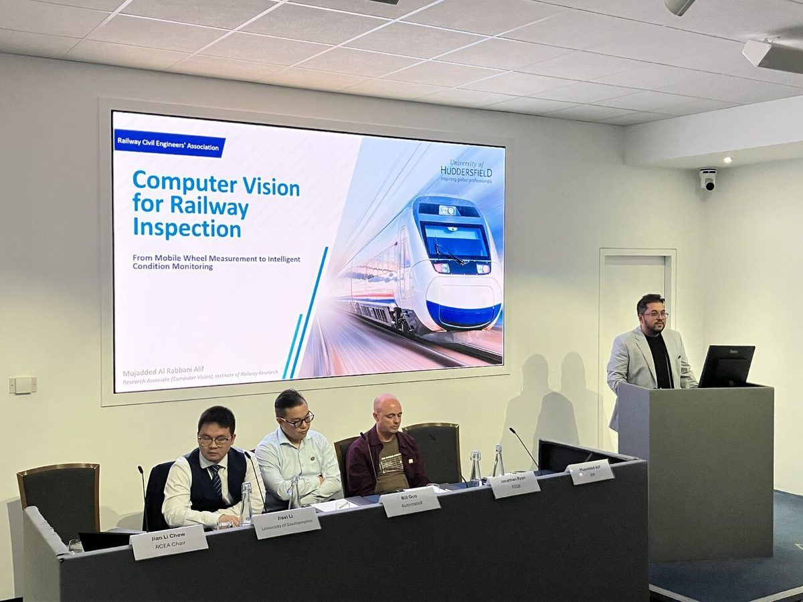
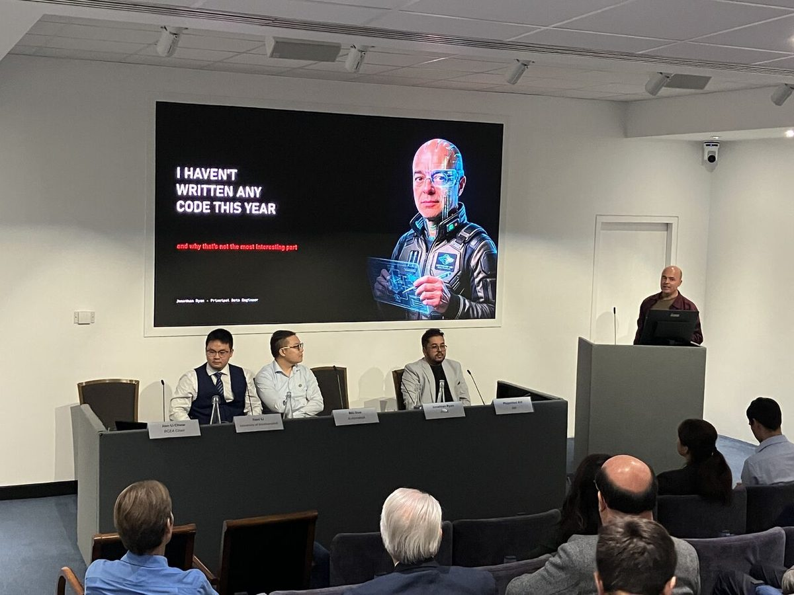
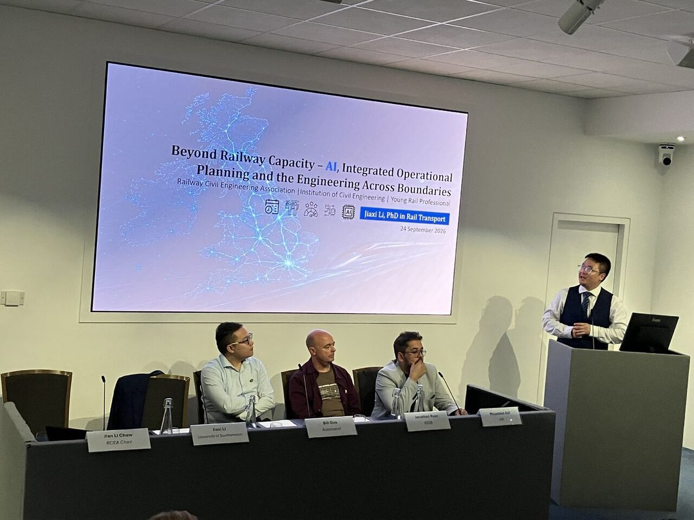
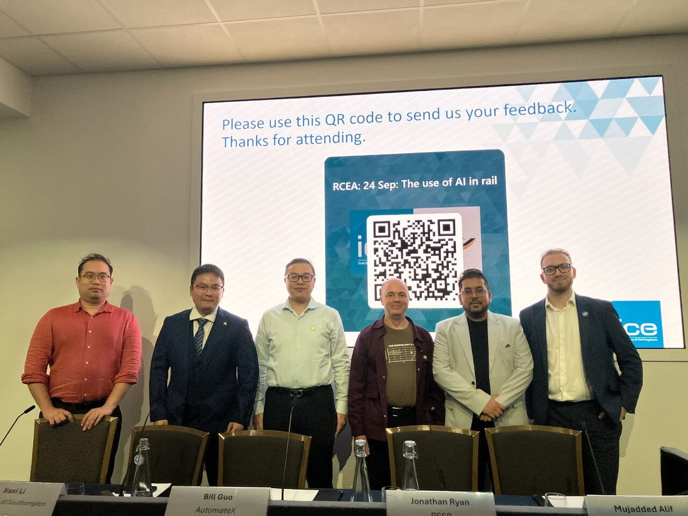
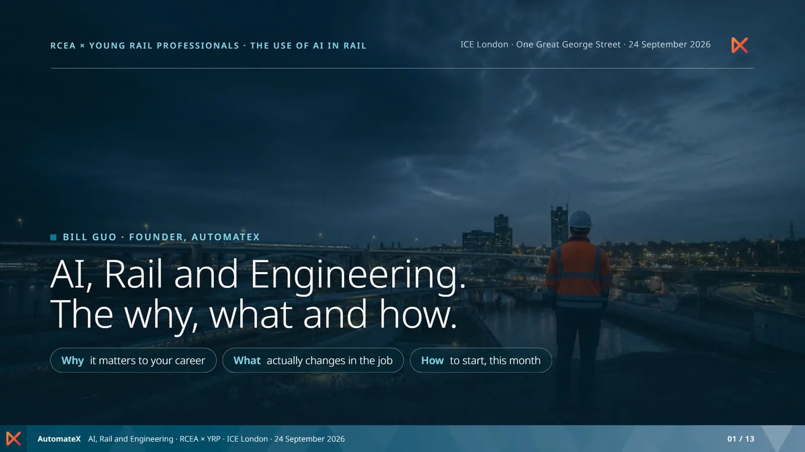
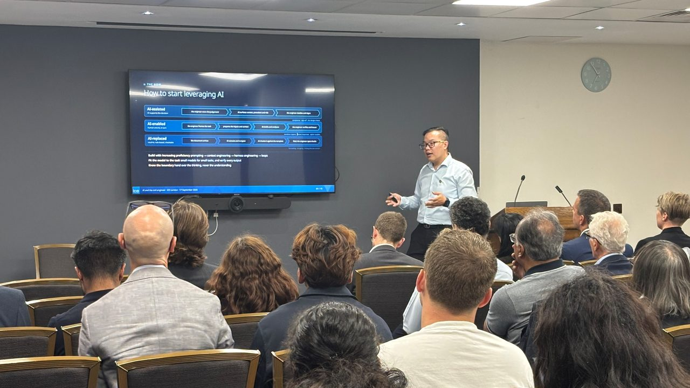

What happened.
On Thursday 24 September, the Railway Civil Engineers’ Association and Young Rail Professionals London and South East put on The use of AI in rail at One Great George Street. It was free, open to all, and pitched at engineers in their first few years in rail.
Jian Li Chew, Chair of the RCEA, and Robin Guo, Chair of YRP London and South East, hosted. Four 20-minute talks followed, then a combined Q&A and drinks.
Bill’s talk ran in three parts. Why: the story of the electric motor, and why nobody is 10 years ahead of you, since the tools only became genuinely useful about 3 years ago. What: the work that surrounds the engineering, and what actually changes in the job. How: score one workflow before you automate it, prove it beside the old way, and use it like an engineer. The Code of Conduct still applies when a machine wrote the first draft.
Nobody is 10 years ahead of you. The best placed people in the room are the ones still learning the job.
Bill Guo FICE CEng MEng, Founder, AutomateX
At a glance.
The talks
The evening in pictures.




AI, Rail and Engineering: the why, what and how.
The 13 slides from Bill’s 20 minutes. Use the arrows or the thumbnails, open them full screen, or take the PDF.

Take it further.

Also this monthAI and the civil engineer: reimagining roles in infrastructure deliverySee the recap →The practical version, every fortnight.
A short newsletter every two weeks on AI in rail: what worked, what did not, and one thing to try. Subscribers also get early access to Scribtive® OS when it opens. Free, and easy to leave.
Consent, UK GDPR Article 6(1)(a). See the privacy notice. The same list as the Scribtive waitlist.